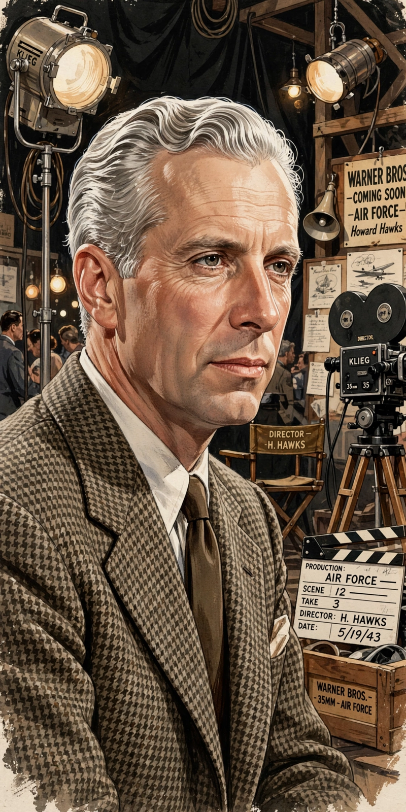

| Howard Hawks | |
|---|---|
 Hawks, master of nearly every Hollywood genre | |
| Born | Howard Winchester Hawks, 30 May 1896, Goshen, Indiana, U.S. |
| Died | 26 December 1977 (aged 81), Palm Springs, California, U.S. |
| Occupation | Film director, producer, screenwriter |
| Known for | Scarface (1932), His Girl Friday (1940), The Big Sleep (1946), Red River (1948), Rio Bravo (1959) |
| Honours | Honorary Academy Award (1975) |
Howard Winchester Hawks (30 May 1896 – 26 December 1977) was an American film director, producer, and screenwriter of the classic Hollywood era. Renowned for his versatility, he made enduring films in nearly every major genre — gangster films, screwball comedies, film noir, westerns, war films, and musicals — in a crisp, unfussy style built on overlapping dialogue, professional camaraderie, and strong-willed women (the "Hawksian woman").
Hawks began in the silent era and broke through with the gangster classic Scarface (1932). The screwball comedies Twentieth Century (1934), Bringing Up Baby (1938), and His Girl Friday (1940) perfected his rapid-fire dialogue style. He directed Humphrey Bogart and Lauren Bacall in To Have and Have Not (1944) and the quintessential noir The Big Sleep (1946), and made the landmark westerns Red River (1948) and Rio Bravo (1959) with John Wayne.
Undervalued in America during his lifetime, Hawks was championed by the Cahiers du Cinéma critics — Jacques Rivette called Scarface and his later work proof of genius — and became a cornerstone of the auteur theory promoted by André Bazin's circle. He received an Honorary Academy Award in 1975 "for his mastery of the art of the motion picture."